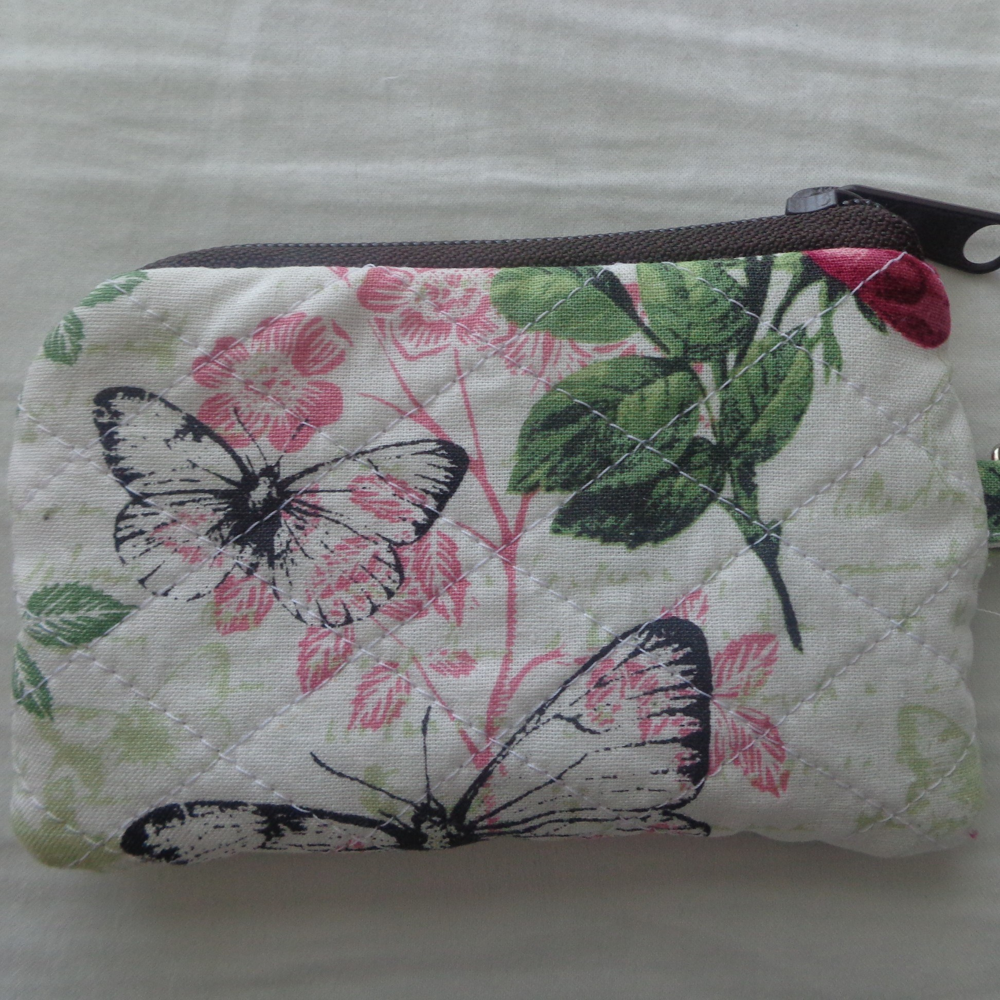
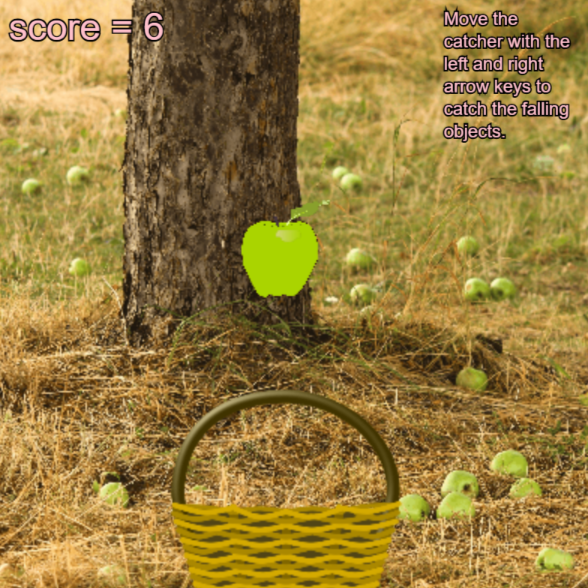
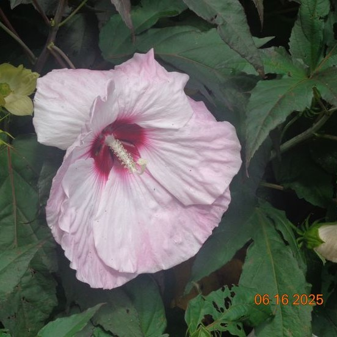
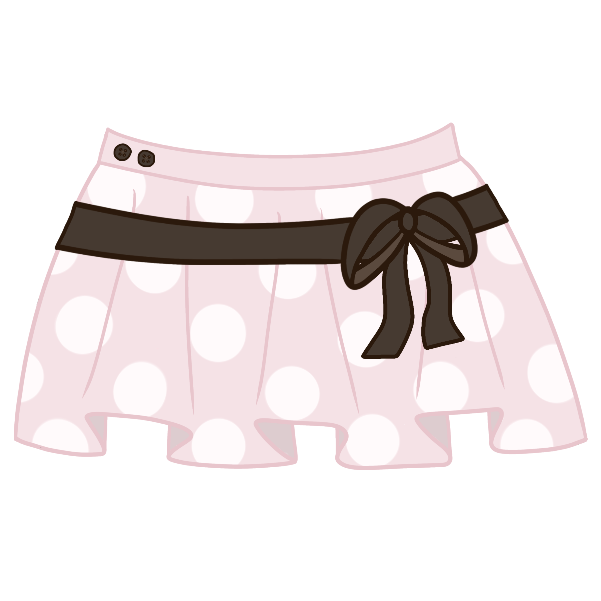

My Creations ( ^ᴗ^)\/✎﹏﹏﹏
I looooove creating, so here is a little showcase! I will say I have pretty limited experience in these hobbies, so don’t expect the best drawings or the most elaborate sewing projects (ᵕ¬ ᴗ ¬), but as I grow so will my portfolio!
sewing: a small pouch with a zipper!

coding: an apple catching game (thx GWC!)

photos: a pic i took of a flower!

art: a pink skirt design I drew!

note: more to come soon, thx for viewing! ദ്ദി(˵ •̀ ᴗ - ˵ ) ✧